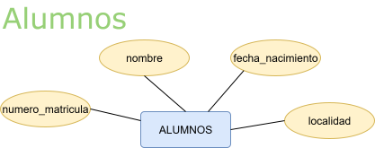
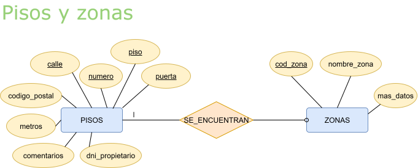
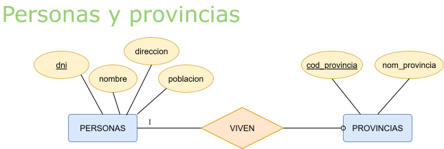
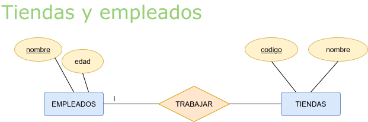

Se valorará además de que la solución de los ejercicios sea correcta, las tabulaciones, los comentarios en el código, nombres de elementos (tablas y campos) en minúscula y
la claridad del código en general.
A partir del esquema conceptual (modelo entidad-relación) siguiente

Se obtiene el siguiente esquema lógico (modelo relacional):
Escribe la instrucción en SQL para crear la tabla ALUMNOS teniendo en cuenta las siguientes restricciones:
💡 Solución
CREATE DATABASE ejercicios;
CREATE TABLE ALUMNOS (
numero_matricula INT(6) PRIMARY KEY,
nombre VARCHAR(15) NOT NULL,
fecha_nacimiento DATE,
direccion VARCHAR(30),
localidad VARCHAR(50)
);
Intenta crear de nuevo la tabla “ALUMNOS” de la actividad anterior. ¿Qué ocurre?
💡 Solución
Table 'ALUMNOS' already exists
SQL devuelve un error, indicando que la tabla ya existe y no se puede volver a crear.
A partir del esquema conceptual (modelo entidad-relación) siguiente

Escribe las instrucciones en SQL para crear las tablas obtenidas en el esquema lógico (del modelo relacional).
Primero crearemos la tabla ZONAS, ya que PISOS hace referencia a dicha tabla.
Recuerda que otra opción sería:
ZONAS (cod_zona <entero 2>, nombre_zona <caracter 20>, mas_datos <caracter 50>)
Restricciones del esquema ER:
PISOS (calle <caracter 30>, numero <entero 3>, piso <entero 2>, puerta <caracter 1>, codigo_postal <entero 5>, metros <entero 5>, comentarios <caracter 60>, cod_zona* <entero 2>, dni_propietario
<caracter 9>)
Restricciones del esquema ER:
💡 Solución
CREATE TABLE ZONAS (
cod_zona INT(2) PRIMARY KEY,
nombre_zona VARCHAR(20),
mas_datos VARCHAR(50)
);
CREATE TABLE PISOS (
calle VARCHAR(30),
numero INT(3),
piso INT(2),
puerta CHAR(1),
codigo_postal INT(5),
metros INT(5),
comentarios VARCHAR(60),
cod_zona INT(2),
dni_propietario CHAR(9),
CONSTRAINT pk_viv PRIMARY KEY (calle, numero, piso, puerta),
FOREIGN KEY (cod_zona) REFERENCES ZONAS(cod_zona)
);
Partiendo del esquema lógico, crea la tabla de proveedores de nuestra comunidad autónoma. La estructura de la tabla es la siguiente:
proveedores(cod_prov, localidad, nombre, provincia)
El diccionario de datos (sólo con restricciones de valor) es:
💡 Solución
CREATE TABLE proveedores (
cod_prov VARCHAR(3) PRIMARY KEY,
localidad VARCHAR(100) DEFAULT NULL,
nombre VARCHAR(100) NOT NULL UNIQUE,
provincia ENUM('Alicante','Valencia','Castellón')
);
En XAMPP-MySQL mediante la utilidad mysql.exe ejecuta las instrucciones anteriores.
Entra a phpMyAdmin y comprueba con el asistente visual la estructura de la tabla y crea otra llamada proveedores2 con la misma información con la herramienta gráfica.
Pulsando en la pestaña Insertar, añade registros a la tabla proveedores2.
Comprueba con el botón Examinar los datos introducidos. Comprobarás que aparece un botón Editar y otro Borrar que afecta a cada registro.
Del esquema conceptual (del modelo entidad-relación) siguiente:

Escribe las instrucciones en SQL para crear las tablas obtenidas en el esquema lógico (del modelo relacional).
La tabla PERSONAS contiene datos sobre las personas de una comunidad, mientras que la tabla PROVINCIAS contiene el código y el nombre de cada provincia, se relacionan por el atributo codprovin.
En primer lugar crearemos la tabla PROVINCIAS y, después la tabla PERSONAS, ya que PERSONAS referencia a PROVINCIAS. Si creamos primero la tabla PERSONAS y la tabla PROVINCIAS no está creada, MySQL emitirá un mensaje de error.
Recuerda que otra opción sería:
Cuando crees las tablas, hazlo sin asignar nombre a las restricciones de clave primaria ni tampoco a las de clave ajena.
PROVINCIAS (cod_provincia <entero 2>, nom_provincia <caracter 25>)
Restricciones del esquema ER:
PERSONAS (dni <entero 8>, nombre <caracter 15>, direccion <caracter 25>, poblacion <caracter 20>, cod_provin* <entero 2>)
Restricciones del esquema ER:
💡 Solución
CREATE TABLE PROVINCIAS (
cod_provincia INT(2) PRIMARY KEY,
nom_provincia VARCHAR(25)
);
CREATE TABLE PERSONAS (
dni INT(8) PRIMARY KEY,
nombre VARCHAR(15),
direccion VARCHAR(25),
poblacion VARCHAR(20),
cod_provin INT(2),
FOREIGN KEY (cod_provin) REFERENCES PROVINCIAS(cod_provincia)
);
Del esquema conceptual (del modelo entidad-relación) siguiente:

Escribe las instrucciones en SQL para crear las tablas obtenidas en el esquema lógico (del modelo relacional).
Primero crearemos la tabla TIENDAS, ya que EMPLEADOS hace referencia a dicha tabla.
TIENDAS (codigo <entero 2>, nombre <caracter 25>)
Restricciones del esquema ER:
EMPLEADOS (nombre <caracter 25>, edad <entero 3>, cod_tienda* <entero 2>)
Restricciones del esquema ER:
Restricciones del diccionario de datos:
💡 Solución 1
CREATE TABLE TIENDAS (
codigo INT(2) PRIMARY KEY,
nombre VARCHAR(25)
);
CREATE TABLE EMPLEADOS (
nombre VARCHAR(25) PRIMARY KEY,
edad INT(3) CHECK (edad BETWEEN 18 AND 65),
cod_tienda INT(2),
FOREIGN KEY (cod_tienda) REFERENCES TIENDAS(codigo)
ON DELETE CASCADE
);
Otra opción sería:
💡 Solución 2
CREATE TABLE EMPLEADOS (
nombre VARCHAR(25) PRIMARY KEY,
edad INT(3) CHECK (edad BETWEEN 18 AND 65),
cod_tienda INT(2)
);
CREATE TABLE TIENDAS (
codigo INT(2) PRIMARY KEY,
nombre VARCHAR(25)
);
ALTER TABLE EMPLEADOS
ADD FOREIGN KEY (cod_tienda) REFERENCES TIENDAS(codigo)
ON DELETE CASCADE;
Para probar las soluciones crearemos bases de datos con phpMyAdmin en XAMPP.
Anteriormente hemos creado las tablas PROVINCIAS y PERSONAS.
CREATE TABLE PROVINCIAS (
cod_provincia INT(2) PRIMARY KEY,
nom_provincia VARCHAR(25)
);
CREATE TABLE PERSONAS (
dni INT(8) PRIMARY KEY,
nombre VARCHAR(15),
direccion VARCHAR(25),
poblacion VARCHAR(20),
cod_provin INT(2),
FOREIGN KEY (cod_provin) REFERENCES PROVINCIAS(cod_provincia)
);
Ahora vamos a insertar las filas que aparecen a continuación en las tablas. Para ello, vamos a utilizar la orden INSERT de la siguiente forma:
INSERT INTO nombre_Tabla [(columna [, columna]...)]
VALUES (valor [, valor]...);
Por ejemplo, para insertar la primera fila de la tabla PROVINCIAS escribiríamos la siguiente sentencia:
INSERT INTO PROVINCIAS (cod_provincia, nom_provincia)
VALUES (1, 'Alicante');
💡 Solución 1
Inserciones en la tabla PROVINCIAS
INSERT INTO PROVINCIAS (cod_provincia, nom_provincia) VALUES (1, 'Alicante');
INSERT INTO PROVINCIAS (cod_provincia, nom_provincia) VALUES (2, 'Valencia');
INSERT INTO PROVINCIAS (cod_provincia, nom_provincia) VALUES (3, 'Castellón');
INSERT INTO PROVINCIAS (cod_provincia, nom_provincia) VALUES (43, 'Barcelona');
INSERT INTO PROVINCIAS (cod_provincia, nom_provincia) VALUES (55, 'Huesca');
Inserciones en la tabla PERSONAS
INSERT INTO PERSONAS (dni, nombre, direccion, poblacion, cod_provin) VALUES (56783412, 'Pepe', 'Avenida de las Américas', 'Castellón', 3);
INSERT INTO PERSONAS (dni, nombre, direccion, poblacion, cod_provin) VALUES (34556784, 'Ramón', 'Calle Poeta Quintana', 'Alicante', 1);
INSERT INTO PERSONAS (dni, nombre, direccion, poblacion, cod_provin) VALUES (12334523, 'Silvia', 'Calle Pintor Aparicio', 'Alicante', 1);
INSERT INTO PERSONAS (dni, nombre, direccion, poblacion, cod_provin) VALUES (98564321, 'Juan', 'Avenida de la Libertad', 'Valencia', 2);
INSERT INTO PERSONAS (dni, nombre, direccion, poblacion, cod_provin) VALUES (90765678, 'Bartolo', 'Calle Rosa Chacel', 'Alicante', 1);
INSERT INTO PERSONAS (dni, nombre, direccion, poblacion, cod_provin) VALUES (45676565, 'Isabel', 'Calle Paraguay', 'Barcelona', 43);
INSERT INTO PERSONAS (dni, nombre, direccion, poblacion, cod_provin) VALUES (23454322, 'Juan', 'Avenida de Alfonso X el Sabio', 'Alicante', 1);
INSERT INTO PERSONAS (dni, nombre, direccion, poblacion, cod_provin) VALUES (67424563, 'Bernardo', 'Plaza Imperial', 'Huesca', 55);
Ahora insertaremos en la tabla PERSONAS una fila dando al campo cod_provin un valor que no exista en provincias. Por ejemplo, prueba a insertar una persona que pertenezca a la provincia de Teruel de código 35. Explica qué ocurre.
💡 Solución 2
INSERT INTO PERSONAS (dni, nombre, direccion, poblacion, cod_provin)
VALUES (11223344, 'Lucía', 'Calle Mayor', 'Teruel', 35);
¿Qué ocurre?
La inserción fallará y el SGBD devolverá un error ya que se produce una violación de la integridad referencial: El campo PERSONAS.cod_provin es una clave foránea a la tabla PROVINCIAS (campo PROVINCIAS.cod_provincia), la provincia 35 no tiene un valor asociado en la tabla PROVINCIAS.
Solución
Antes de realizar la inserción en PERSONAS, dar de alta la provincia 35 en PROVINCIAS.
INSERT INTO PROVINCIAS (cod_provincia, nom_provincia) VALUES (35, 'Teruel');
INSERT INTO PERSONAS (dni, nombre, direccion, poblacion, cod_provin) VALUES (11223344, 'Lucía', 'Calle Mayor', 'Teruel', 35);
En este ejercicio partimos de la situación en que las tablas PROVINCIAS y PERSONAS tienen datos, ya que los hemos insertado en el ejercicio anterior.
Vamos a borrar todas las filas de la tabla PROVINCIAS. Recuerda que para ello podemos utilizar la orden DELETE.
Observa que se produce un error. ¿Por qué?
💡 Solución 1
Borrado de todas las filas de la tabla PROVINCIAS
DELETE FROM PROVINCIAS;
¿Qué ocurre?
El borrado fallará y el SGBD devolverá un error ya que se produce una violación de la integridad referencial: Hay campos de la tabla PERSONAS (PERSONAS.cod_provincia) que dependen de PROVINCIAS (PROVINCIAS.cod_provincia), PROVINCIAS.cod_provincia es una clave foránea a PERSONAS.cod_provincia
Para solucionarlo, borra la tabla PERSONAS con la orden DROP y vuelve a crearla con la restricción adecuada (ON DELETE y ON UPDATE) para que se mantenga la integridad referencial.
💡 Solución 2
-- Eliminar la tabla PERSONAS
DROP TABLE PERSONAS;
-- Volver a crearla con la restricción ON DELETE CASCADE
CREATE TABLE PERSONAS (
dni INT(8) PRIMARY KEY,
nombre VARCHAR(15),
direccion VARCHAR(25),
poblacion VARCHAR(20),
cod_provin INT(2),
FOREIGN KEY (cod_provin) REFERENCES PROVINCIAS(cod_provincia) ON DELETE CASCADE
);
-- También se podría incluir ON UPDATE CASCADE
Ahora, vuelve a insertar las filas en la tabla PERSONAS.
Borra una fila de la tabla PROVINCIAS ¿Qué ocurre en la tabla PERSONAS?
💡 Solución 3
-- Inserciones en la tabla PERSONAS
INSERT INTO PERSONAS (dni, nombre, direccion, poblacion, cod_provin) VALUES (56783412, 'Pepe', 'Avenida de las Américas', 'Castellón', 3);
INSERT INTO PERSONAS (dni, nombre, direccion, poblacion, cod_provin) VALUES (34556784, 'Ramón', 'Calle Poeta Quintana', 'Alicante', 1);
INSERT INTO PERSONAS (dni, nombre, direccion, poblacion, cod_provin) VALUES (12334523, 'Silvia', 'Calle Pintor Aparicio', 'Alicante', 1);
INSERT INTO PERSONAS (dni, nombre, direccion, poblacion, cod_provin) VALUES (98564321, 'Juan', 'Avenida de la Libertad', 'Valencia', 2);
INSERT INTO PERSONAS (dni, nombre, direccion, poblacion, cod_provin) VALUES (90765678, 'Bartolo', 'Calle Rosa Chacel', 'Alicante', 1);
INSERT INTO PERSONAS (dni, nombre, direccion, poblacion, cod_provin) VALUES (45676565, 'Isabel', 'Calle Paraguay', 'Barcelona', 43);
INSERT INTO PERSONAS (dni, nombre, direccion, poblacion, cod_provin) VALUES (23454322, 'Juan', 'Avenida de Alfonso X el Sabio', 'Alicante', 1);
INSERT INTO PERSONAS (dni, nombre, direccion, poblacion, cod_provin) VALUES (67424563, 'Bernardo', 'Plaza Imperial', 'Huesca', 55);
INSERT INTO PERSONAS (dni, nombre, direccion, poblacion, cod_provin) VALUES (11223344, 'Lucía', 'Calle Mayor', 'Teruel', 35);
--- Borrado de una fila de la tabla PROVINCIAS
DELETE FROM PROVINCIAS WHERE cod_provincia = 1;
--- ¿Qué ocurre con la tabla PERSONAS?
SELECT * FROM PERSONAS;
| dni | nombre | direccion | poblacion | cod_provin |
|-----------|----------|----------------------------|-----------|------------|
| 56783412 | Pepe | Avenida de las Américas | Castellón | 3 |
| 98564321 | Juan | Avenida de la Libertad | Valencia | 2 |
| 45676565 | Isabel | Calle Paraguay | Barcelona | 43 |
| 67424563 | Bernardo | Plaza Imperial | Huesca | 55 |
| 11223344 | Lucía | Calle Mayor | Teruel | 35 |
¿Qué ocurre en la tabla PERSONAS?
Solución 1
Borrar antes la tabla PROVINCIAS
DELETE FROM PERSONAS;
DELETE FROM PROVINCIAS;
Solución 2
Cuando se está creando el diseño físico de la base de datos, preveer qué acción tomar ante un borrado de datos relacionados. Por ejemplo, ON DELETE CASCADE (al eliminar un registro, se eliminan los registros asociados del resto de tablas).
CREATE TABLE PROVINCIAS (
cod_provincia INT(2) PRIMARY KEY,
nom_provincia VARCHAR(25)
);
CREATE TABLE PERSONAS (
dni INT(8) PRIMARY KEY,
nombre VARCHAR(15),
direccion VARCHAR(25),
poblacion VARCHAR(20),
cod_provin INT(2),
FOREIGN KEY (cod_provin) REFERENCES PROVINCIAS(cod_provincia) ON DELETE CASCADE
);
Solución 3
Si la base de datos ya ha sido creada, podríamos modificar PROVINCIAS, crear una nueva clave foránea estableciendo ON DELETE CASCADE
-- Eliminar la clave foránea (los datos no se eliminan)
ALTER TABLE PERSONAS DROP FOREIGN KEY cod_provin;
-- Crear la nueva clave foránea
ALTER TABLE PERSONAS FOREIGN KEY (cod_provin) REFERENCES PROVINCIAS(cod_provincia) ON DELETE CASCADE;
Haz un script de creación de la base de datos ATLETISMO (atletismo.sql) a partir del modelo lógico-relacional.
Los tipos de datos de los distintos campos serán los que consideres convenientes, siempre que la solución adoptada sea coherente.
CLUBS(codigo, nombre, ciudad)
ATLETAS(nif, nombre, apellidos)
COMPETICIONES(codigo, descripcion, ciudad, fechaEvento)
ACTIVIDADES_DEPORTIVAS(codigo, descripcion)
FECHAS(fechaAlta)
PARTICIPAR(club, competicion)
CF: club → CLUBS
CF: competicion → COMPETICIONES
PRACTICAR(atleta, deporte, plusmarca)
CF: atleta → ATLETAS
CF: deporte → ACTIVIDADES_DEPORTIVAS
PERTENECER(atleta, fecha, club, fechaBaja)
CF: atleta → ATLETAS
CF: fecha → FECHAS
CF: club → CLUBS
COMPETIR(competicion, atleta, deporte, marca)
CF: competicion → COMPETICIONES
CF: atleta → ATLETAS
CF: deporte → ACTIVIDADES_DEPORTIVAS
Haz un script de creación de la base de datos STARTREK (startrek.sql) a partir del modelo lógico-relacional.
Los tipos de datos de los distintos campos serán los que consideres convenientes, siempre que la solución adoptada sea coherente.
ACTORES(idActor, nombre, nacionalidad, fechaNacimiento)
PERSONAJES(nombre, raza, graduacionMilitar, actor, capMilitar)
CF: actor → ACTORES
CF: capMilitar → PERSONAJES
PELÍCULAS(titulo, director, añoLanzamiento, protagonista)
CF: protagonista → PERSONAJES
CAPÍTULOS(titulo, temporada, ordenRodaje, fechaEmision1)
PLANETAS(codigo, nombre, galaxia)
NAVES(codigo, nombre, tripulacion)
APARECER(personaje, pelicula)
CF: personaje → PERSONAJES
CF: pelicula → PELÍCULAS
PARTICIPAR(capitulo, personaje)
CF: capitulo → CAPÍTULOS
CF: personaje → PERSONAJES
VISITAR(capitulo, planeta, nave, problema)
CF: capitulo → CAPÍTULOS
CF: planeta → PLANETAS
CF: nave → NAVES